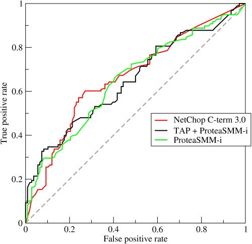

本文主要内容有：
- 错误率（Error Rate）与准确率（Accuracy、ACC）
- 混淆矩阵（Confusion matrix）
- 精确率（Precision）、召回率（Recall）、F1值（F1-score）
- 宏精确率（macro-P）、宏召回率（marco-R）、宏F1值（macro-F1）、微精确率（micro-P）、微召回率（micro-R）、微F1值（micro-F1）
- ROC与AUC
- Mean Average Precision @ K
- 回归任务的评估指标
对于分类模型常用的分类指标有1-6。这些评估指标，工程和研究中都会经常遇到，需要对其有透彻的理解和对其中的差别清楚知晓。本文对这些指标进行一些总结和归纳。
1. 错误率（Error Rate）与准确率（Accuracy、ACC）
准确率亦称精度。错误率与准确率是分类任务中常见的性能度量，同时适用于二分类及多分类任务。错误率是分类错误的样本数占样本总数的比例，准确率是分类正确的样本数占样本总数的比例。显然，二者的和为1。
对于样例集$D$，分类的错误率可以定义为：
$$
\begin{equation}
E(f; D) = \frac{1}{m} \sum_{i=1}^m {I(f(x_i) \ne y_i)}
\end{equation} \tag{1}
$$
其中m表示m个类别，$y_i$表示$x_i$对应的真实标签。
准确率则定义为：
$$
\begin{equation}
\begin{split}
ACC(f; D) & = \frac{1}{m} \sum_{i=1}^m {I(f(x_i) = y_i)} \\
& = 1 - E(f; D)
\end{split}
\end{equation} \tag{2}
$$
对于更一般的情况，数据分布为D，概率分布为p(·)，错误率和准确率可以描述为：
$$
\begin{equation}
E(f; D) = \int_{x \sim D} I(f(x) \ne y)p(x) {\rm d}x
\end{equation} \tag{3}
$$
$$
\begin{equation}
\begin{split}
ACC(f; D) & = \int_{x \sim D} I(f(x) = y)p(x) {\rm d}x \\
& = 1 - E(f; D)
\end{split}
\end{equation} \tag{4}
$$
2. 混淆矩阵（Confusion matrix）
混淆矩阵是监督学习中的一种可视化工具，主要用于比较分类结果和实例的真实信息。矩阵中的每一行代表实例的预测类别，每一列代表实例的真实类别。下表是一个二分类任务的分类结果的混淆矩阵。
| - | 真实值为正样本P | 真实值为负样本N |
|---|---|---|
| 预测值为P | True Postive(TP) | False Postive(FP) |
| 预测值为N | False Negative(FN) | True Negative(TN) |
在混淆矩阵中，每一个实例可以划分为以下四种类型之一：
- 真正(True Positive , TP)：被模型预测为正的正样本
- 假正(False Positive , FP)：被模型预测为正的负样本
- 假负(False Negative , FN)：被模型预测为负的正样本
- 真负(True Negative , TN)：被模型预测为负的负样本
3. 真正率、假负率、假正率及真负率
定义以下几个指标
- 真正率(True Positive Rate, TP Rate, TPR)（灵敏度sensitivity， 也是召回率）定义为$\frac{被预测为正的正样本结果数}{正样本实际数}$，即：
$$
\begin{equation}
TPR = \frac{TP}{TP + FN}
\end{equation} \tag{5}
$$
- 假负率(False Negative Rate, FN Rate, FNR)定义为$\frac{被预测为负的正样本结果数}{正样本实际数}$，即：
$$
\begin{equation}
FNR = \frac{FN}{TP + FN}
\end{equation} \tag{6}
$$
- 假正率(False Positive Rate, FP Rate, FPR) 定义为$\frac{被预测为正的负样本结果数}{负样本实际数}$，即：
$$
\begin{equation}
FPR = \frac{FP}{FP + TN}
\end{equation} \tag{7}
$$
- 真负率(True Negative Rate, TN Rate, TNR)（特指度specificity）定义为$\frac{被预测为负的负样本结果数}{负样本实际数}$，即：
$$
\begin{equation}
TNR = \frac{TN}{TN + FP}
\end{equation} \tag{8}
$$
可以看出，真正（TP）和假负（FN）都是实际类别是正样本，分别被判为正及负，真正率（TPR）及假负率（FNR）都是除以正样本的总个数（TP+FN）。所以TPR+FNR=1。类似的，假正（FP）和真负（TN）都是实际样本类别是负样本，分别被判为正及负，假正率（FPR）及真负率（TNR）都是除以负样本的总数（FP+TN）。所以FPR+TNR=1。
可以看出，以上四个率（Rate）都是除以他们的真实标签对应的所有与它们真实标签相同的样本的个数。TPR、FNR二者知其一，便知另外一个。FPR、TNR也只需要知道一个便知另外一个。
一个具体的例子，就是[5]。假设你正在构建一个使用麦克风来监听用户说出特定“唤醒词”，检测到“唤醒词就唤醒系统的硬件设备。例如亚马逊的Echo倾听“Alexa”，苹果siri的“Hey Siri”，安卓的“Okay Google”及百度应用的“你好，百度”。你关心的是假正率（假阳性率）及假负率（假阴性率）。假正率（假阳性率）指没有人说唤醒词系统醒来的频率，假负率（假阴性率）是当有人说唤醒词系统没有醒来的频率。一个合理的目标是在满足每运行24小时不会有一个假阳性（满足指标）的情况下，最大限度的减少假阴性率（优化指标）。
在weka里，会显示TPR和FPR两个参数。
3. 精确率（Precision）、召回率（Recall）、F1值（F1-score）
二分类问题常用的评价指标有精确率（Precision）、召回率（Recall）和F1值。精确率亦称为“查准率”，召回率亦称“查全率”。
精确率定义为：
$$
\begin{equation}
P = \frac{TP}{TP+FP}
\end{equation} \tag{9}
$$
召回率定义为：
$$
\begin{equation}
R = \frac{TP}{TP+FN}
\end{equation} \tag{10}
$$
F1之定义为精确率和召回率的调和平均数，即：
$$
\begin{equation}
\frac{2}{F1} = \frac{1}{P} + \frac{1}{R}
\end{equation} \tag{11}
$$
即
$$
\begin{equation}
\begin{split}
F1 & = \frac{2PR}{P+R} \\
& = \frac{2}{\frac{TP+FP}{TP}+\frac{TP+FN}{TP}} \\
& = \frac{2TP}{2TP+FP+FN}
\end{split}
\end{equation} \tag{12}
$$
对于一些应用，精确率和召回率重视程度不同，比如在商品推荐中，为了减少对用户的打扰，更希望推荐用户感兴趣的，此时精确率更重要。查找逃犯时，希望尽可能的减少逃犯遗漏，则召回率更重要。于是有了F1值更一般的形势$F_\beta$，定义为精确率和召回率的加权平均数：
$$
\begin{equation}
\frac{1+\beta^2}{F_\beta} = \frac{1}{P} + \frac{\beta^2}{R}
\end{equation} \tag{13}
$$
即：
$$
\begin{equation}
F_\beta = \frac{(1+\beta^2)PR}{\beta^2P + R}
\end{equation} \tag{14}
$$
其中，$\beta > 0$，$\beta$度量了精确率和召回率之间的重要性，当$\beta=1$时,就是F1；当$\beta<1$时，精确率更重要；当$\beta>1$时，召回率更重要。这些结论可以通过观察公式（13）得出。
4. 宏精确率（macro-P）、宏召回率（marco-R）、宏F1值（macro-F1）、微精确率（micro-P）、微召回率（micro-R）、微F1值（micro-F1）
很多时候我们有多个二分类混淆矩阵，例如进行多次训练/测试，每次得到一个混淆矩阵;或是在多个数据集上进行训练/测试，希望估计算法的”全局”
性能;甚或是执行多分类任务，每两两类别的组合都对应一个混淆矩阵，总之，我们希望在个二分类混淆矩阵上综合考察精确率和召回率。
一种直接的做法是现在各个混淆矩阵上分别计算出精确率和召回率，记为$(P_1, R_1),(P_2,R_2),…,(P_n, R_n)$，再计算平均值，这样就得到宏精确率（macro-P）、宏召回率（marco-R）、宏F1值（macro-F1），分别定义如下：
$$
\begin{equation}
marco-P = \frac{1}{n} \sum_{i=1}^n P_i
\end{equation} \tag{15}
$$
$$
\begin{equation}
marco-R = \frac{1}{n} \sum_{i=1}^n R_i
\end{equation} \tag{16}
$$
$$
\begin{equation}
marco-F1 = \frac{2 \times marco-P \times macro-R}{macro-P + macro-R}
\end{equation} \tag{17}
$$
除此之外，还可以将各个混淆矩阵的对应元素进行平均，得到TP、FP、TN、FN的平均值，分别记为$\overline{TP}、 \overline{FP}、 \overline{TN}、 \overline{FN}$，然后再基于这些指标，计算出微精确率（micro-P）、微召回率（micro-R）、微F1值（micro-F1），分别定义如下：
$$
\begin{equation}
mirco-P = \frac{\overline{TP}}{\overline{TP}+\overline{FP}}
\end{equation} \tag{18}
$$
$$
\begin{equation}
mirco-R = \frac{\overline{TP}}{\overline{TP}+\overline{FN}}
\end{equation} \tag{19}
$$
$$
\begin{equation}
mirco-F1 = \frac{2 \times mirco-P \times micro-R}{micro-P + micro-R}
\end{equation} \tag{20}
$$
5. ROC与AUC
ROC全称是受试者工作特征（Receiver Operating Characteristic）。ROC曲线的纵轴是上文提到的真正率（TPR），横轴是假正率（FPR），分别对应于公式（5）和公式（7）。此处再次搬运过来。
$$
\begin{equation}
TPR = \frac{TP}{TP + FN}
\end{equation} \tag{21}
$$
$$
\begin{equation}
FPR = \frac{FP}{FP + TN}
\end{equation} \tag{22}
$$
正如前文分析的那样，TPR的分子为分类结果中为正样本且真实标签也为正样本的个数，分母是所有样本中正样本的个数。FPR的分子为分类结果为正样本且真实样本为负样本的个数，分母是所有样本中负样本的个数。所以对于一个固定的测试集来说，TPR、FPR的分母都是固定值。一个ROC曲线图如下所示：

对上图的四个关键点进行分析：
- (0,0)：TP=0，FP=0，可以发现该分类器预测所有的样本都为负样本(Negative)
- (1,1)：TN=0，FN=0，可以发现该分类器预测所有的样本都为正样本(Positive)
- (0,1)：FP=0，FN=0，它将所有的样本都正确分类
- (1,0)：TP=0，TN=0，它将所有的样本都错误分类
从上面的分析我们可以看到，如果ROC曲线越靠近左上方，那么分类器的效果越好。进行学习器的比较时，若一个分类器的ROC曲线完全包住另一个分类器，那么可以判断前者的性能更好。
ROC的绘图过程是：给定$m^+$个正样本和$m^-$个负样本。根据学习期预测结果对样例进行排序，然后把分类阈值设为最大，则把所有结果预测为负样本，此时真正率和假正率均为0，在坐标（0,0）处标记一个点。然后，将分类阈值一次设为每个样本的预测值，即依次将每个样例划分为正样本。设签一个标记点坐标为（x，y），当前若为正样本，则对应标记点的坐标为$(x,y+\frac{1}{m^+})$；当前若当负样本，则对应标记点的坐标为$(x+\frac{1}{m^-}, y)$，然后用线段连接相邻点即可。
在进行学习期比较时，如果一个学习期的ROC曲线被另一个学习期的曲线完全“包住”，则可以断言后者优于前者。但是如果有交叉，则一般难以断言哪个更好。此时如果一定要比较，则较为合理的判断是比较ROC曲线下的面积，即AUC（Area Under ROC Curve）。
从以上定义可知，AUC可以通过对ROC曲线下个面积求和得到。假设ROC曲线的坐标为${(x_1, y_1),(x_2, y_2),…(x_m, y_m)}的点按序连接而成$(x_1 = 0, x_m = 1)$，则AUC可以估算为：
$$
\begin{equation}
AUC = \frac{1}{2} \sum_{i=1}^{m-1} (x_{i+1} - x_i)(y_i + y_{i+1})
\end{equation} \tag{23}
$$
6. Mean Average Precision @ K
在kaggle的Freesound General-Purpose Audio Tagging Challenge[7]使用的评估方法是Mean Average Precision @ 3 (MAP@3)，该问题是每个音频文件进行自动标注，每个音频实际上只对应一个标签，但是可以做出最多三个预测标签值，对应的公式是：
$$
\begin{equation}
MAP@3 = \frac{1}{U} \sum_{u=1}^U {\sum_{k=1}^{min(n,3)} P(k)}
\end{equation} \tag{24}
$$
U是样本的总个数，最后是对每个样本的评价求平均，所以关键还是要Average Precision @ 3 (AP@3），所以对应的公式是：
$$
\begin{equation}
AP@3 = \sum_{k=1}^{min(n,3)} P(k)
\end{equation} \tag{25}
$$
n是预测结果的总个数，也就是限制为3。比如一个真实标签为鸟叫声的音频，可以预测为：鸟叫声，门声，玻璃破碎声。则对应的结果为AP@3 = 1 * 1 + 0 * 1/2 + 0 * 1/3 = 1。也就是每一位是有权重的，越靠前权重越高，第一位权重为1，第二位1/2，第三位为1/3。如果预测为门声，玻璃破碎声，鸟叫声，则AP@3 = 0 * 1 + 0 * 1/2 + 0 * 1/3 = 1/3 。
7. 回归任务的评估指标
回归任务中最常用的性能度量是均方误差（mean squared error)：
$$
\begin{equation}
E(f; D) = \frac{1}{m} \sum_{i=1}^m (f(x_i)-y_i)^2
\end{equation} \tag{26}
$$
更一般的，对于数据分布D和概率密度函数p(·)，均方误差可以如下定义：
$$
\begin{equation}
E(f; D) = \int_{x \sim D} (f(x) - y)^2p(x) {\rm d}x
\end{equation} \tag{27}
$$
8. 后续工作
与其他内容一样，有内容会持续更新。
PRC Area与MCC还需要在更新。
参考资料：
- http://blog.sina.com.cn/s/blog_629e606f0102v7a0.html
- https://en.wikipedia.org/wiki/Evaluation_of_binary_classifiers
- 周志华《机器学习》
- 李航《统计学习方法》
- https://yuchenchen.gitbook.io/machine-learning-yearning/9.-you-hua-he-man-zu-zhi-biao
- https://zhuanlan.zhihu.com/p/25528580
- https://www.kaggle.com/c/freesound-audio-tagging#evaluation
- http://yucc.me/p/82f51d0e/